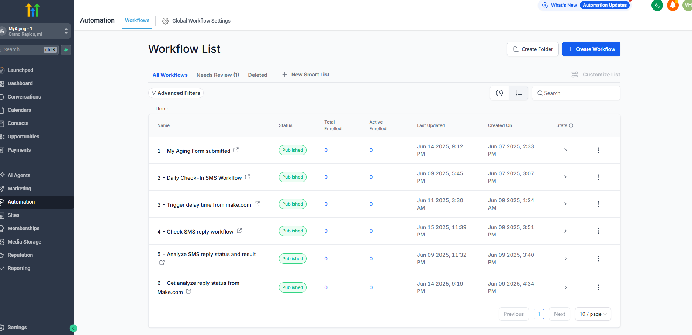
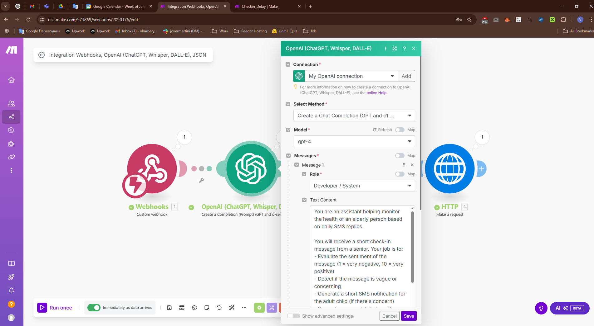
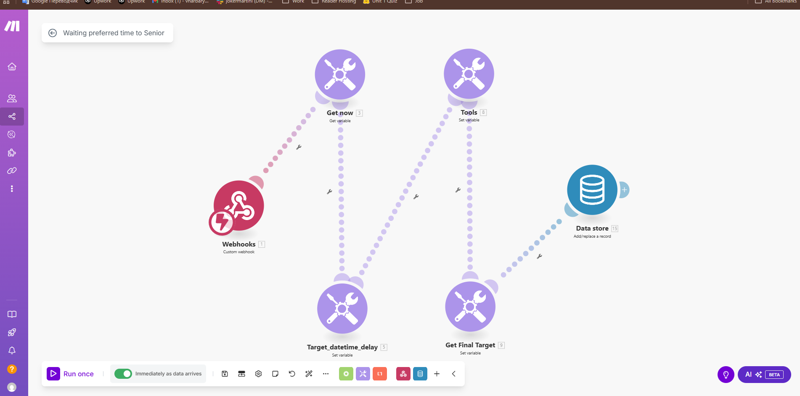
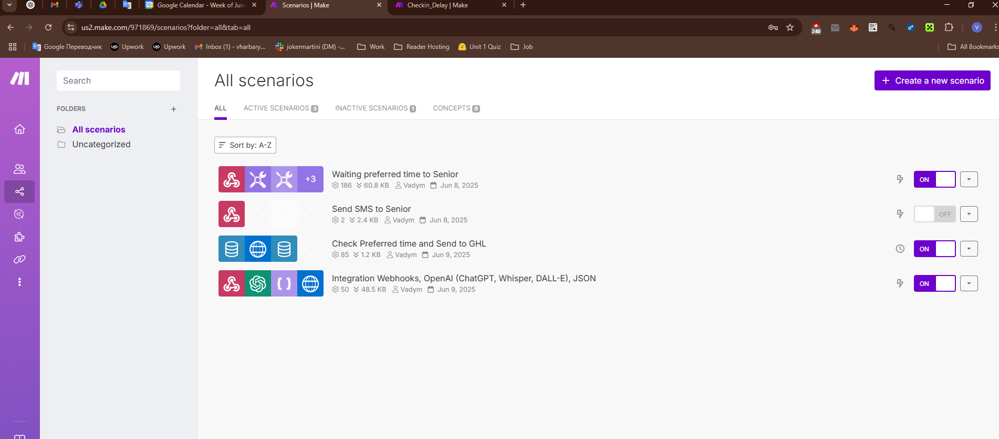
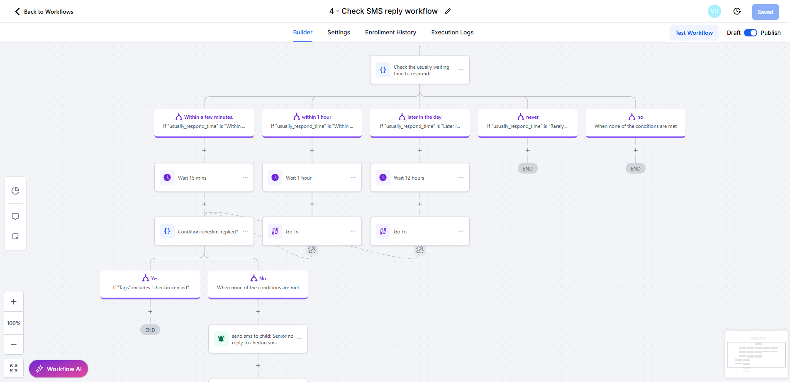

Overview
MyAging.ai is a proactive AI assistant designed to monitor the wellbeing of elderly individuals through daily SMS check-ins. It evaluates the tone of their replies and triggers appropriate alerts using GHL workflows, OpenAI analysis, and Make.com scheduling.
- ✅ Sends daily check-in SMS to seniors
- 🧠 Uses OpenAI GPT-4 to analyze replies (tone, urgency, content)
- 📥 Stores replies and check-in times in GHL & Make data stores
- 📤 Sends alerts to caregivers or family if a concern is detected or no reply
Automation Workflow
1. GHL Workflow Setup
2. Daily SMS with OpenAI Evaluation
  3. MyAging Interface Snapshot
🎯 Key Outcomes
- 📡 Real-time AI monitoring of elderly health status
- 📊 Auto-escalation to family members when replies are concerning or absent
- 🛡️ Reduces risk of unnoticed emergencies
- 🔁 Flexible logic to match senior behavior (reply delay, tone, no response)
- ⚙️ Fully integrated with GHL, OpenAI, and Make.com